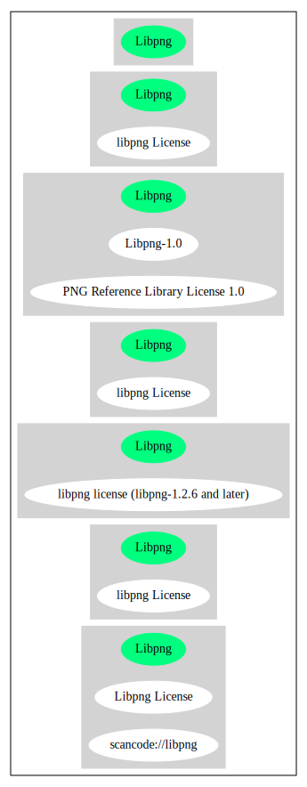

Key |
Value |
|---|---|
Fullname |
libpng License |
Shortname |
Libpng |
Rating |
Go |
Classification |
NoCopyleft |
Other Names:
scancode://libpng
↑“Rating is: Bronze” (source: BlueOak License List)
Homepage: http://www.libpng.org/pub/png/libpng.html
SPDX: http://spdx.org/licenses/Libpng.json
SPDX: https://spdx.org/licenses/Libpng.html
http://www.libpng.org/pub/png/src/libpng-LICENSE.txt
USE CASE Source code delivery
YOU MUST NOT Appropriate
YOU MUST Forward License text
IF Software modification
YOU MUST Mark
YOU MUST NOT Appropriate
USE CASE Binary delivery
(source: OSADL License Checklist)
This copy of the libpng notices is provided for your convenience. In case of
any discrepancy between this copy and the notices in the file png.h that is
included in the libpng distribution, the latter shall prevail.
COPYRIGHT NOTICE, DISCLAIMER, and LICENSE:
If you modify libpng you may insert additional notices immediately following
this sentence.
libpng versions 1.2.6, August 15, 2004, through 1.2.33, October 31, 2008, are
Copyright (c) 2004, 2006-2008 Glenn Randers-Pehrson, and are
distributed according to the same disclaimer and license as libpng-1.2.5
with the following individual added to the list of Contributing Authors
Cosmin Truta
libpng versions 1.0.7, July 1, 2000, through 1.2.5 - October 3, 2002, are
Copyright (c) 2000-2002 Glenn Randers-Pehrson, and are
distributed according to the same disclaimer and license as libpng-1.0.6
with the following individuals added to the list of Contributing Authors
Simon-Pierre Cadieux
Eric S. Raymond
Gilles Vollant
and with the following additions to the disclaimer:
There is no warranty against interference with your enjoyment of the
library or against infringement. There is no warranty that our
efforts or the library will fulfill any of your particular purposes
or needs. This library is provided with all faults, and the entire
risk of satisfactory quality, performance, accuracy, and effort is with
the user.
libpng versions 0.97, January 1998, through 1.0.6, March 20, 2000, are
Copyright (c) 1998, 1999 Glenn Randers-Pehrson, and are
distributed according to the same disclaimer and license as libpng-0.96,
with the following individuals added to the list of Contributing Authors:
Tom Lane
Glenn Randers-Pehrson
Willem van Schaik
libpng versions 0.89, June 1996, through 0.96, May 1997, are
Copyright (c) 1996, 1997 Andreas Dilger
Distributed according to the same disclaimer and license as libpng-0.88,
with the following individuals added to the list of Contributing Authors:
John Bowler
Kevin Bracey
Sam Bushell
Magnus Holmgren
Greg Roelofs
Tom Tanner
libpng versions 0.5, May 1995, through 0.88, January 1996, are
Copyright (c) 1995, 1996 Guy Eric Schalnat, Group 42, Inc.
For the purposes of this copyright and license, "Contributing Authors"
is defined as the following set of individuals:
Andreas Dilger
Dave Martindale
Guy Eric Schalnat
Paul Schmidt
Tim Wegner
The PNG Reference Library is supplied "AS IS". The Contributing Authors
and Group 42, Inc. disclaim all warranties, expressed or implied,
including, without limitation, the warranties of merchantability and of
fitness for any purpose. The Contributing Authors and Group 42, Inc.
assume no liability for direct, indirect, incidental, special, exemplary,
or consequential damages, which may result from the use of the PNG
Reference Library, even if advised of the possibility of such damage.
Permission is hereby granted to use, copy, modify, and distribute this
source code, or portions hereof, for any purpose, without fee, subject
to the following restrictions:
1. The origin of this source code must not be misrepresented.
2. Altered versions must be plainly marked as such and must not
be misrepresented as being the original source.
3. This Copyright notice may not be removed or altered from any
source or altered source distribution.
The Contributing Authors and Group 42, Inc. specifically permit, without
fee, and encourage the use of this source code as a component to
supporting the PNG file format in commercial products. If you use this
source code in a product, acknowledgment is not required but would be
appreciated.
A "png_get_copyright" function is available, for convenient use in "about"
boxes and the like:
printf("%s",png_get_copyright(NULL));
Also, the PNG logo (in PNG format, of course) is supplied in the
files "pngbar.png" and "pngbar.jpg (88x31) and "pngnow.png" (98x31).
Libpng is OSI Certified Open Source Software. OSI Certified Open Source is a
certification mark of the Open Source Initiative.
Glenn Randers-Pehrson
glennrp at users.sourceforge.net
October 31, 2008{
"__impliedNames": [
"Libpng",
"libpng License",
"scancode://libpng",
"Libpng License"
],
"__impliedId": "Libpng",
"facts": {
"SPDX": {
"isSPDXLicenseDeprecated": false,
"spdxFullName": "libpng License",
"spdxDetailsURL": "http://spdx.org/licenses/Libpng.json",
"_sourceURL": "https://spdx.org/licenses/Libpng.html",
"spdxLicIsOSIApproved": false,
"spdxSeeAlso": [
"http://www.libpng.org/pub/png/src/libpng-LICENSE.txt"
],
"_implications": {
"__impliedNames": [
"Libpng",
"libpng License"
],
"__impliedId": "Libpng",
"__isOsiApproved": false,
"__impliedURLs": [
[
"SPDX",
"http://spdx.org/licenses/Libpng.json"
],
[
null,
"http://www.libpng.org/pub/png/src/libpng-LICENSE.txt"
]
]
},
"spdxLicenseId": "Libpng"
},
"OSADL License Checklist": {
"_sourceURL": "https://www.osadl.org/fileadmin/checklists/unreflicenses/Libpng.txt",
"spdxId": "Libpng",
"osadlRule": "USE CASE Source code delivery\n\tYOU MUST NOT Appropriate\n\tYOU MUST Forward License text\n\tIF Software modification\n\t\tYOU MUST Mark\n\t\tYOU MUST NOT Appropriate\nUSE CASE Binary delivery\n",
"_implications": {
"__impliedNames": [
"Libpng"
]
}
},
"Scancode": {
"otherUrls": [
"http://www.libpng.org/pub/png/src/libpng-LICENSE.txt"
],
"homepageUrl": "http://www.libpng.org/pub/png/libpng.html",
"shortName": "Libpng License",
"textUrls": null,
"text": "This copy of the libpng notices is provided for your convenience. In case of\nany discrepancy between this copy and the notices in the file png.h that is\nincluded in the libpng distribution, the latter shall prevail.\n\nCOPYRIGHT NOTICE, DISCLAIMER, and LICENSE:\n\nIf you modify libpng you may insert additional notices immediately following\nthis sentence.\n\nlibpng versions 1.2.6, August 15, 2004, through 1.2.33, October 31, 2008, are\nCopyright (c) 2004, 2006-2008 Glenn Randers-Pehrson, and are\ndistributed according to the same disclaimer and license as libpng-1.2.5\nwith the following individual added to the list of Contributing Authors\n\n Cosmin Truta\n\nlibpng versions 1.0.7, July 1, 2000, through 1.2.5 - October 3, 2002, are\nCopyright (c) 2000-2002 Glenn Randers-Pehrson, and are\ndistributed according to the same disclaimer and license as libpng-1.0.6\nwith the following individuals added to the list of Contributing Authors\n\n Simon-Pierre Cadieux\n Eric S. Raymond\n Gilles Vollant\n\nand with the following additions to the disclaimer:\n\n There is no warranty against interference with your enjoyment of the\n library or against infringement. There is no warranty that our\n efforts or the library will fulfill any of your particular purposes\n or needs. This library is provided with all faults, and the entire\n risk of satisfactory quality, performance, accuracy, and effort is with\n the user.\n\nlibpng versions 0.97, January 1998, through 1.0.6, March 20, 2000, are\nCopyright (c) 1998, 1999 Glenn Randers-Pehrson, and are\ndistributed according to the same disclaimer and license as libpng-0.96,\nwith the following individuals added to the list of Contributing Authors:\n\n Tom Lane\n Glenn Randers-Pehrson\n Willem van Schaik\n\nlibpng versions 0.89, June 1996, through 0.96, May 1997, are\nCopyright (c) 1996, 1997 Andreas Dilger\nDistributed according to the same disclaimer and license as libpng-0.88,\nwith the following individuals added to the list of Contributing Authors:\n\n John Bowler\n Kevin Bracey\n Sam Bushell\n Magnus Holmgren\n Greg Roelofs\n Tom Tanner\n\nlibpng versions 0.5, May 1995, through 0.88, January 1996, are\nCopyright (c) 1995, 1996 Guy Eric Schalnat, Group 42, Inc.\n\nFor the purposes of this copyright and license, \"Contributing Authors\"\nis defined as the following set of individuals:\n\n Andreas Dilger\n Dave Martindale\n Guy Eric Schalnat\n Paul Schmidt\n Tim Wegner\n\nThe PNG Reference Library is supplied \"AS IS\". The Contributing Authors\nand Group 42, Inc. disclaim all warranties, expressed or implied,\nincluding, without limitation, the warranties of merchantability and of\nfitness for any purpose. The Contributing Authors and Group 42, Inc.\nassume no liability for direct, indirect, incidental, special, exemplary,\nor consequential damages, which may result from the use of the PNG\nReference Library, even if advised of the possibility of such damage.\n\nPermission is hereby granted to use, copy, modify, and distribute this\nsource code, or portions hereof, for any purpose, without fee, subject\nto the following restrictions:\n\n1. The origin of this source code must not be misrepresented.\n\n2. Altered versions must be plainly marked as such and must not\n be misrepresented as being the original source.\n\n3. This Copyright notice may not be removed or altered from any\n source or altered source distribution.\n\nThe Contributing Authors and Group 42, Inc. specifically permit, without\nfee, and encourage the use of this source code as a component to\nsupporting the PNG file format in commercial products. If you use this\nsource code in a product, acknowledgment is not required but would be\nappreciated.\n\n\nA \"png_get_copyright\" function is available, for convenient use in \"about\"\nboxes and the like:\n\n printf(\"%s\",png_get_copyright(NULL));\n\nAlso, the PNG logo (in PNG format, of course) is supplied in the\nfiles \"pngbar.png\" and \"pngbar.jpg (88x31) and \"pngnow.png\" (98x31).\n\nLibpng is OSI Certified Open Source Software. OSI Certified Open Source is a\ncertification mark of the Open Source Initiative.\n\nGlenn Randers-Pehrson\nglennrp at users.sourceforge.net\nOctober 31, 2008",
"category": "Permissive",
"osiUrl": null,
"owner": "libpng",
"_sourceURL": "https://github.com/nexB/scancode-toolkit/blob/develop/src/licensedcode/data/licenses/libpng.yml",
"key": "libpng",
"name": "Libpng License",
"spdxId": "Libpng",
"notes": null,
"_implications": {
"__impliedNames": [
"scancode://libpng",
"Libpng License",
"Libpng"
],
"__impliedId": "Libpng",
"__impliedCopyleft": [
[
"Scancode",
"NoCopyleft"
]
],
"__calculatedCopyleft": "NoCopyleft",
"__impliedText": "This copy of the libpng notices is provided for your convenience. In case of\nany discrepancy between this copy and the notices in the file png.h that is\nincluded in the libpng distribution, the latter shall prevail.\n\nCOPYRIGHT NOTICE, DISCLAIMER, and LICENSE:\n\nIf you modify libpng you may insert additional notices immediately following\nthis sentence.\n\nlibpng versions 1.2.6, August 15, 2004, through 1.2.33, October 31, 2008, are\nCopyright (c) 2004, 2006-2008 Glenn Randers-Pehrson, and are\ndistributed according to the same disclaimer and license as libpng-1.2.5\nwith the following individual added to the list of Contributing Authors\n\n Cosmin Truta\n\nlibpng versions 1.0.7, July 1, 2000, through 1.2.5 - October 3, 2002, are\nCopyright (c) 2000-2002 Glenn Randers-Pehrson, and are\ndistributed according to the same disclaimer and license as libpng-1.0.6\nwith the following individuals added to the list of Contributing Authors\n\n Simon-Pierre Cadieux\n Eric S. Raymond\n Gilles Vollant\n\nand with the following additions to the disclaimer:\n\n There is no warranty against interference with your enjoyment of the\n library or against infringement. There is no warranty that our\n efforts or the library will fulfill any of your particular purposes\n or needs. This library is provided with all faults, and the entire\n risk of satisfactory quality, performance, accuracy, and effort is with\n the user.\n\nlibpng versions 0.97, January 1998, through 1.0.6, March 20, 2000, are\nCopyright (c) 1998, 1999 Glenn Randers-Pehrson, and are\ndistributed according to the same disclaimer and license as libpng-0.96,\nwith the following individuals added to the list of Contributing Authors:\n\n Tom Lane\n Glenn Randers-Pehrson\n Willem van Schaik\n\nlibpng versions 0.89, June 1996, through 0.96, May 1997, are\nCopyright (c) 1996, 1997 Andreas Dilger\nDistributed according to the same disclaimer and license as libpng-0.88,\nwith the following individuals added to the list of Contributing Authors:\n\n John Bowler\n Kevin Bracey\n Sam Bushell\n Magnus Holmgren\n Greg Roelofs\n Tom Tanner\n\nlibpng versions 0.5, May 1995, through 0.88, January 1996, are\nCopyright (c) 1995, 1996 Guy Eric Schalnat, Group 42, Inc.\n\nFor the purposes of this copyright and license, \"Contributing Authors\"\nis defined as the following set of individuals:\n\n Andreas Dilger\n Dave Martindale\n Guy Eric Schalnat\n Paul Schmidt\n Tim Wegner\n\nThe PNG Reference Library is supplied \"AS IS\". The Contributing Authors\nand Group 42, Inc. disclaim all warranties, expressed or implied,\nincluding, without limitation, the warranties of merchantability and of\nfitness for any purpose. The Contributing Authors and Group 42, Inc.\nassume no liability for direct, indirect, incidental, special, exemplary,\nor consequential damages, which may result from the use of the PNG\nReference Library, even if advised of the possibility of such damage.\n\nPermission is hereby granted to use, copy, modify, and distribute this\nsource code, or portions hereof, for any purpose, without fee, subject\nto the following restrictions:\n\n1. The origin of this source code must not be misrepresented.\n\n2. Altered versions must be plainly marked as such and must not\n be misrepresented as being the original source.\n\n3. This Copyright notice may not be removed or altered from any\n source or altered source distribution.\n\nThe Contributing Authors and Group 42, Inc. specifically permit, without\nfee, and encourage the use of this source code as a component to\nsupporting the PNG file format in commercial products. If you use this\nsource code in a product, acknowledgment is not required but would be\nappreciated.\n\n\nA \"png_get_copyright\" function is available, for convenient use in \"about\"\nboxes and the like:\n\n printf(\"%s\",png_get_copyright(NULL));\n\nAlso, the PNG logo (in PNG format, of course) is supplied in the\nfiles \"pngbar.png\" and \"pngbar.jpg (88x31) and \"pngnow.png\" (98x31).\n\nLibpng is OSI Certified Open Source Software. OSI Certified Open Source is a\ncertification mark of the Open Source Initiative.\n\nGlenn Randers-Pehrson\nglennrp at users.sourceforge.net\nOctober 31, 2008",
"__impliedURLs": [
[
"Homepage",
"http://www.libpng.org/pub/png/libpng.html"
],
[
null,
"http://www.libpng.org/pub/png/src/libpng-LICENSE.txt"
]
]
}
},
"BlueOak License List": {
"BlueOakRating": "Bronze",
"url": "https://spdx.org/licenses/Libpng.html",
"isPermissive": true,
"_sourceURL": "https://blueoakcouncil.org/list",
"name": "libpng License",
"id": "Libpng",
"_implications": {
"__impliedNames": [
"Libpng",
"libpng License"
],
"__impliedJudgement": [
[
"BlueOak License List",
{
"tag": "PositiveJudgement",
"contents": "Rating is: Bronze"
}
]
],
"__impliedCopyleft": [
[
"BlueOak License List",
"NoCopyleft"
]
],
"__calculatedCopyleft": "NoCopyleft",
"__impliedURLs": [
[
"SPDX",
"https://spdx.org/licenses/Libpng.html"
]
]
}
},
"finos/OSLC-handbook": {
"terms": [
{
"termUseCases": [
"MB",
"MS"
],
"termSeeAlso": null,
"termDescription": "notice of modifications",
"termComplianceNotes": "Modified verions must be \"plainly marked as such\" and not misrepresented as the original software",
"termType": "condition"
},
{
"termUseCases": [
"US",
"MS"
],
"termSeeAlso": null,
"termDescription": "Provide copyright notice",
"termComplianceNotes": "Copyright notices may not be removed or altered for any source distribution",
"termType": "condition"
},
{
"termUseCases": null,
"termSeeAlso": null,
"termDescription": "The origin of the code must not be misrepresented",
"termComplianceNotes": null,
"termType": "other"
}
],
"_sourceURL": "https://github.com/finos/OSLC-handbook/blob/master/src/libpng.yaml",
"name": "libpng License",
"nameFromFilename": "libpng",
"notes": null,
"_implications": {
"__impliedNames": [
"Libpng",
"libpng License"
]
},
"licenseId": [
"Libpng",
"libpng License"
]
}
},
"__impliedJudgement": [
[
"BlueOak License List",
{
"tag": "PositiveJudgement",
"contents": "Rating is: Bronze"
}
]
],
"__impliedCopyleft": [
[
"BlueOak License List",
"NoCopyleft"
],
[
"Scancode",
"NoCopyleft"
]
],
"__calculatedCopyleft": "NoCopyleft",
"__isOsiApproved": false,
"__impliedText": "This copy of the libpng notices is provided for your convenience. In case of\nany discrepancy between this copy and the notices in the file png.h that is\nincluded in the libpng distribution, the latter shall prevail.\n\nCOPYRIGHT NOTICE, DISCLAIMER, and LICENSE:\n\nIf you modify libpng you may insert additional notices immediately following\nthis sentence.\n\nlibpng versions 1.2.6, August 15, 2004, through 1.2.33, October 31, 2008, are\nCopyright (c) 2004, 2006-2008 Glenn Randers-Pehrson, and are\ndistributed according to the same disclaimer and license as libpng-1.2.5\nwith the following individual added to the list of Contributing Authors\n\n Cosmin Truta\n\nlibpng versions 1.0.7, July 1, 2000, through 1.2.5 - October 3, 2002, are\nCopyright (c) 2000-2002 Glenn Randers-Pehrson, and are\ndistributed according to the same disclaimer and license as libpng-1.0.6\nwith the following individuals added to the list of Contributing Authors\n\n Simon-Pierre Cadieux\n Eric S. Raymond\n Gilles Vollant\n\nand with the following additions to the disclaimer:\n\n There is no warranty against interference with your enjoyment of the\n library or against infringement. There is no warranty that our\n efforts or the library will fulfill any of your particular purposes\n or needs. This library is provided with all faults, and the entire\n risk of satisfactory quality, performance, accuracy, and effort is with\n the user.\n\nlibpng versions 0.97, January 1998, through 1.0.6, March 20, 2000, are\nCopyright (c) 1998, 1999 Glenn Randers-Pehrson, and are\ndistributed according to the same disclaimer and license as libpng-0.96,\nwith the following individuals added to the list of Contributing Authors:\n\n Tom Lane\n Glenn Randers-Pehrson\n Willem van Schaik\n\nlibpng versions 0.89, June 1996, through 0.96, May 1997, are\nCopyright (c) 1996, 1997 Andreas Dilger\nDistributed according to the same disclaimer and license as libpng-0.88,\nwith the following individuals added to the list of Contributing Authors:\n\n John Bowler\n Kevin Bracey\n Sam Bushell\n Magnus Holmgren\n Greg Roelofs\n Tom Tanner\n\nlibpng versions 0.5, May 1995, through 0.88, January 1996, are\nCopyright (c) 1995, 1996 Guy Eric Schalnat, Group 42, Inc.\n\nFor the purposes of this copyright and license, \"Contributing Authors\"\nis defined as the following set of individuals:\n\n Andreas Dilger\n Dave Martindale\n Guy Eric Schalnat\n Paul Schmidt\n Tim Wegner\n\nThe PNG Reference Library is supplied \"AS IS\". The Contributing Authors\nand Group 42, Inc. disclaim all warranties, expressed or implied,\nincluding, without limitation, the warranties of merchantability and of\nfitness for any purpose. The Contributing Authors and Group 42, Inc.\nassume no liability for direct, indirect, incidental, special, exemplary,\nor consequential damages, which may result from the use of the PNG\nReference Library, even if advised of the possibility of such damage.\n\nPermission is hereby granted to use, copy, modify, and distribute this\nsource code, or portions hereof, for any purpose, without fee, subject\nto the following restrictions:\n\n1. The origin of this source code must not be misrepresented.\n\n2. Altered versions must be plainly marked as such and must not\n be misrepresented as being the original source.\n\n3. This Copyright notice may not be removed or altered from any\n source or altered source distribution.\n\nThe Contributing Authors and Group 42, Inc. specifically permit, without\nfee, and encourage the use of this source code as a component to\nsupporting the PNG file format in commercial products. If you use this\nsource code in a product, acknowledgment is not required but would be\nappreciated.\n\n\nA \"png_get_copyright\" function is available, for convenient use in \"about\"\nboxes and the like:\n\n printf(\"%s\",png_get_copyright(NULL));\n\nAlso, the PNG logo (in PNG format, of course) is supplied in the\nfiles \"pngbar.png\" and \"pngbar.jpg (88x31) and \"pngnow.png\" (98x31).\n\nLibpng is OSI Certified Open Source Software. OSI Certified Open Source is a\ncertification mark of the Open Source Initiative.\n\nGlenn Randers-Pehrson\nglennrp at users.sourceforge.net\nOctober 31, 2008",
"__impliedURLs": [
[
"SPDX",
"http://spdx.org/licenses/Libpng.json"
],
[
null,
"http://www.libpng.org/pub/png/src/libpng-LICENSE.txt"
],
[
"SPDX",
"https://spdx.org/licenses/Libpng.html"
],
[
"Homepage",
"http://www.libpng.org/pub/png/libpng.html"
]
]
}